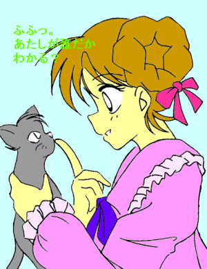
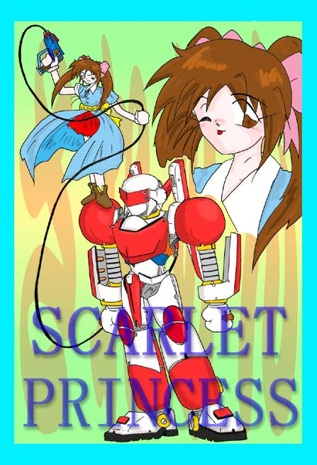
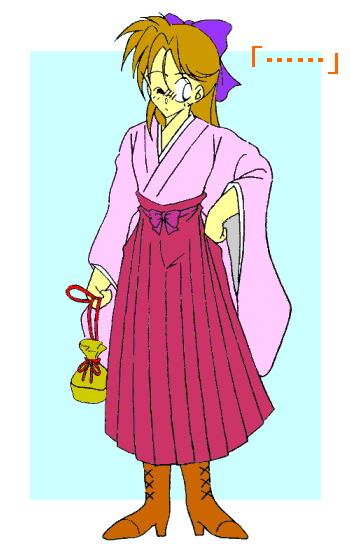
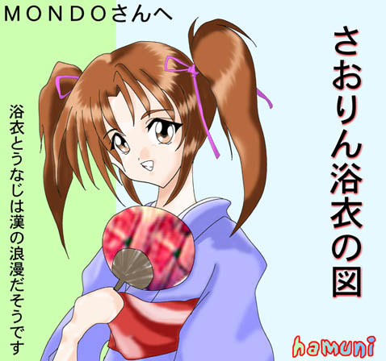
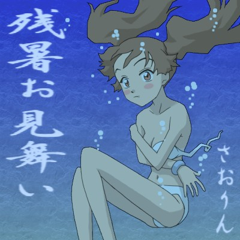
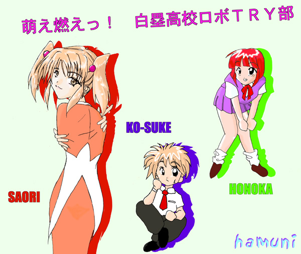
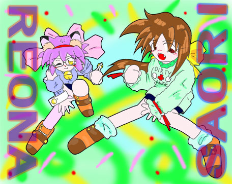
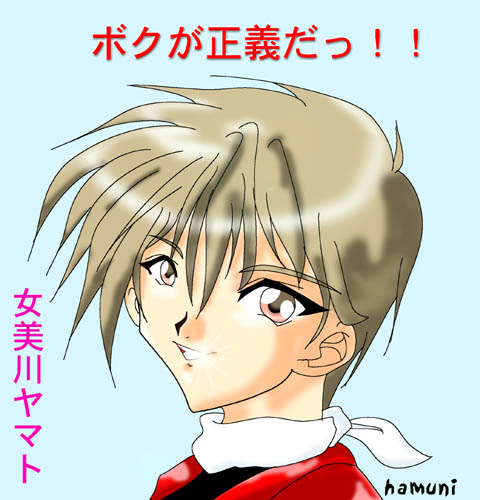

『沙織 織り姫version』ｂｙ ｍｉｓｓｉｎｇさん
――萌え燃えっ！ 白塁学園高校女子ロボＴＲＹ部 ＥＸ−Ｓ――
さおりん歳時記
ＣＲＥＡＴＥＤ ＢＹ ＭＯＮＤＯ
はじめに……
この『さおりん歳時記』は、少年少女文庫第二掲示板に書き込んだ『ロボトラ』のショートショートをひとつにまとめたものです。
また、挿絵はこれまで皆様からいただいたイラストＣＧを使っております。
角さん、ｈａｍｕｎｉさん、ｍｉｓｓｉｎｇさん、原田聖也さん、改めてありがとうございました。
４月 『お目ざめさおりんっ』
ブラインドの隙間からさし込む朝日。
目ざまし時計の電子音。
「ん……んんっ。…………ふわわっ――」
寝ぼけまなこをこすり、ゆっくりと伸びをする…………
「ひゃっ!!」
ぷるんと揺れたＣカップの胸に驚いて、あわててそれをかき抱き、
「……あ、そうか。今、女の子なんだっけ…………」
そうつぶやくと甲介――いや、沙織はあらためて自分の姿を見直した。
女の子の身体、女の子のゆったりしたパジャマ。
男の下着だとごわごわして寝づらい……と、夜中にショーツに履き替えて……
ついでだからと何から何まで
“全部”
替えたことを思い出し、ちょっと顔を赤らめる。
「ふふっ。……よっ、と――」
くすっと笑みを浮かべてベッドからとび起きると、パジャマの裾をふわっとなびかせ、もう一度伸びをする。
「……んっ♪」
口からもれた可愛らしい声と、身体中から伝わってくるくすぐったい感覚に、今の自分が正真正銘女の子であることを自覚する。
「ん…………んっ、……あー、あ、お、おれ…………あ、あ……あた、あ……あたし――」
思わず引っかかりながら、声を出してみる。
ブラインドを上げ、窓を開けると、小さな影が部屋の中にとび込んできた。
最近、メガパペットの足元をねぐらにしている子ネコである。

５月 『さおりん萌え萌え育児日記っ！』
「ただいま」
「ちょうどよかったっ。こうちゃん、今すぐ沙織ちゃんに変身してっ。お願いっ」
「へっ！？ あ…………ごめん、学校に忘れ物した」
帰ってくるなり母親にいきなりそう声をかけられ、甲介は反射的にきびすを返して逃げようとした。
「こらこらっ。ちょっと待ちなさいっ」
苦笑とともに呼び止められ、彼はため息をつきながら振り返る。「――ったくなんだよいきなりっ。……あ、あれ？ どしたの？ その赤ちゃん」
見ると、母親の腕の中に小さな女の子の赤ん坊が抱きかかえられている。
「右向かいの、茂森さんとこの真奈美（まなみ）ちゃん。一晩うちで預かることになったの。
母さんお店があるから、こうちゃ……じゃなくて沙織ちゃんにこの子の面倒みておいてもらおうって思ったのよ」
「……そんなことなら、別に男のままでも問題ないだろ――」
そうつぶやきながら赤ん坊を覗き込む甲介。するとその赤ん坊は、いきなり火がついたように泣きだした。
「うわわっ！？」
「あ〜駄目駄目。この子、父親以外の男のヒト見るとすぐ泣いちゃうのよ」「……はいっ？」
「…………どうせ、『ちょうど親戚の女の子が遊びに来てるのよ〜』とか言って安請け合いしたんだろ、また……」
可愛いらしい声に似合わぬ口調でそうつぶやくと、甲介――もとい、沙織は姿見に映った自分の姿に向かって、「べーっ」と舌を出した。
今日の沙織の服装は白のブラウスに、チェックのボックスプリーツ。
髪はいつものキャンディヘアにせず、カチューシャでとめて背中に流している。
「おまたせっ」
「あ、ごめーん。お客さん来てるの。あとよろしくねっ」
「はいはい。……は〜い真奈美ちゃ〜ん、沙織お姉ちゃんでちゅよ〜っ」
赤ん坊を両腕で抱きかかえ、その顔を覗き込む沙織。「――ふふっ。さっきとずいぶん態度が違いまちゅね〜っ。…………なめとんのか、おいっ」
こらこら、赤ん坊にケンカ売ってどーする（笑）。
しかし、さっきとは逆にきゃっきゃっと嬉しそうに声を上げるものだから、沙織の中の甲介がむっとするのも無理はない……かもしれない。
「でも、ははは……やっぱ可愛いっ」
ふにふにっ――と赤ん坊の頬を指でつつき、沙織は首をかしげて微笑んだ。
「……ひゃっ！」
胸元でごそごそされ、沙織はくすぐったさに思わず悲鳴を上げた。
「あっ。……こ、こらっ。あたしはまだおっぱい出ないわよっ。もうっ」
赤ん坊相手なんだからわざわざ女言葉にしなくてもいいと思うのだが、そこはそれ、気は心（？）というやつだ。
だが赤ん坊はしきりに沙織の胸に手を伸ばしてくる。もしかしたら、おなかがすいているのかもしれない。
仕方ないな……と、つぶやきながら、沙織は母親を呼ぼうと立ち上がり、
――あ、そ、そうだ…………。
再びソファに腰を下ろすと、キョロキョロとあたりを無意味にうかがう。
そして片手で赤ん坊を抱き直すと、顔を赤らめながら空いた方の手でブラウスのボタンをはずし始めた。
「え、え〜っと、こ、こう、か……な？」
そう言いながら、ブラジャーのカップをずらす。
ぽろっとまろび出た胸の膨らみに、沙織の胸元に抱えられた赤ん坊はゆっくりと顔を近づけ――
「…………な、何やってるのよ、沙織ちゃん……」
「あ、え…………って、うわわわわ母さんいつの間にいいいいっっ!!」
横からいきなり声をかけられ、沙織は思わずパニくってしまう。
よく赤ん坊を取り落とさなかったものだ。
「え、え〜っと、こ……これは、そ、その……、つ、つまり……」
「どーでもいいけど、……さっさと胸しまいなさいっ」「…………」
呆れ返った口調で母親にそう言われ、沙織は赤ん坊を抱いたまま、顔を真っ赤にして身をちぢめるのだった。

６月 『墓前にて』
「……あなた、見てる？ あたしたちの息子は………………こんなに可愛い娘に成長したわ〜っ」
「なんだそりゃっ」
まさかこの
“姿”
でここへ来ることになろうとは、思ってもみなかった。
しかし、近くにある焼肉屋の石焼きビビンバセットにつられて、ほいほい変身してついてきた自分が悪いといえば悪いのだが（笑）。
こんな今の自分を、亡き父親は草葉の陰からどう見ているのだろう。
――もしかしたら腹抱えて笑い転げているかもしれない……。
父親の墓の前で、ついそう思ってしまう沙織（甲介）であった。
「…………早いものぢゃな、剣介が亡くなって……」
いつの間にかあらわれたお師匠が、沙織の母親にそう話しかけた。
「そうですわね……」
「ちょうどその頃だったかのう、剣介の勤めとったアサカワ重機が買収されたのは――」
「ええ。同僚だったはるかちゃん（ほのかの母親）の旦那さんも、それを機に会社辞めて自分のお店持ったんですよね……」
甲介の父――剣介が他界したのは、甲介が物心つく以前のことであった。
技師として勤めていた工場が放火され、それに巻き込まれて亡くなったのである。
その後犯人とされた人物が自殺し、事件は被疑者死亡のまま決着している。
ただ、ほのかの父親をはじめとするかつての同僚たちの間で、「飯綱さんは出向先の女美川重工で、何か大変なものを
“見た”
らしい」という噂がまことしやかに流れたことがあった。
「…………いまさらそんなこと蒸し返しても、仕方のない話ですけどね……」
肩をすくめておどけたように言う沙織の母親に、お師匠は黙ってうなずいた。
そのままふたりは、無言のまま墓前にたたずむ。
――しかし、それで済むとは…………思えんのぢゃがの……。
「……あれ？ 師匠、どうしてここに？」
「何度言ったら分かるっ、『おじいさま』と呼ばぬかっ」
両手に一本ずつ缶ジュースを持って戻ってきた沙織を、お師匠はお約束の台詞で一喝した。
「――まあよい。それはそうと…………どうぢゃ沙織、今から父親代わりのワシと『でえと』せぬか？」
「は……？」
「あらいいわね沙織ちゃん。じゃあ早速『対お師匠様用デートウェア』に着替えないとねっ」
「…………」


７月 『さおりん織姫危機一髪っ？』
さ〜さ〜の〜は〜、さ〜らさら〜っ♪
「――というわけでわたしたち女子ロボＴＲＹ部は、浴衣姿で七夕パーティの真っ最中で〜すっ」
「…………だから誰に向かって説明してんのよ？ 舞香」
まあとにかく、そういうことだった。
『七夕パーティ』なのだから、学校の竹林から取ってきた笹を飾りつけ、短冊をぶら下げて気分を盛り上げる。
そこには「新しいタンキニ（タンクトップビキニ）の水着が欲しい」とか、「今度のフリマで掘り出し物が見つかりますように」とか、「期末（テスト）で補習組にならないように」なんて書いてあったりする（笑）。
だが、何万光年も離れているため年に一度しか会えない不幸な遠距離恋愛カップルの逢瀬（ちょっと違う……）を祝福しようなんて気なんか毛頭ない。
要するに、集まって飲み食いする口実に過ぎないのだ。
――ああ…………わらび餅のきな粉は、どうしてバカみたいに残るのだろう……。
いささか現実逃避気味にそんなこと考えながら、沙織は風に揺れる短冊をぼーっと眺めていた。
「いいな〜さおりん、その浴衣――」
「そ、そう……かな？」
祥子に声をかけられ、我に返った沙織（甲介）は首をひねって自分の格好を見直した。
青色の地に水色の花模様を散らせた浴衣と、緋色の帯。
ちょっとおとなしめだが、もちろん母親が見立てたものである。
「――で……でも、祥子の浴衣もよく似合ってるよっ」
「えへへ、そう？」
そう言われて、薄いグレーに赤と黄色の紅葉をあしらった浴衣を着た祥子もまんざらではない顔をする。
昼間の蒸し暑さも緩む夕暮れ時。ほのかの家に集合した彼女たちは、誰が言いだしたわけでもないのに全員浴衣姿であった。
――あ〜なんかどんどん適応していってる…………オレって。
いまさら何を言わんやだが、やっぱりそう思ってしまう沙織の中の甲介。
「ねえさおり〜んっ、願い事何書いた〜？」
とびつくように彼女にくっついてきた舞香は、白と水色の地に赤やオレンジの蝶が舞っているデザインの浴衣を着ている。
手にはもちろん、短冊とサインペン。
「え？ え、え〜っと、ま、まだだけど……」
しかし中身が男の甲介である沙織に、“女の子の”
願い事なんてすぐに思いつくわけがない。
とりあえず手にした短冊に「女子狼慕闘羅威部参上」などとしたため（笑）て、「――そ、それより舞香は、ど……どんな願い事した、の？」
「ふふっ。『さおりんみたいな胸になりますように』って書いちゃった」
「…………」
半眼になりつつ、沙織は顔を赤らめる。
「……そういえば沙織ちゃん、このあと保育園のお泊まり会にボランティア行くんだって？」
だ、誰にそれを――とほのかに言いかけ、思い直して口をつぐむ沙織。
そんなこと嬉々として言いふらすのは、自分の母親以外にいるわけがない。
「へ〜っ。……で、何するの？」
そう尋ねてきたかなめに、ほのかはニコッと笑みを浮かべて人差し指をたてた。
「『織姫とひこ星』のお芝居するんだって。……ね、沙織ちゃん」
保育園の園長さんと顔なじみである母親が、勝手にお膳立てしたことは言うまでもない。
ちなみにほのかは紺色の地にアサガオ模様の浴衣、かなめは淡いグリーンに格子模様の浴衣姿である。
「へ〜すごいな〜っ。じゃあさおりんが織姫役なんだ」
「ねえねえ、あたしたちも見に行こうよっ」
「え！？ ち――ちょっとそれはっ、こ……困る……ん、だ、けど……」
「どうして？」
「だ、だって…………その、は、恥ずかしい…………」
「え〜っいいじゃない。さおりんの織姫、見たい見たい見たい〜っ！」
「…………」

「きゃーっ、けんぎゅうさまーっ、たすけてーっ」（←棒読み）
「ふははははっ。織姫はこの白鳥座Ｘ−１ブラックホール怪人があずかったあああああっ！！」
「そうはさせんぞブラックホール怪人っ！ ばんがいおおおおお〜っ、くわあああむひぃやあああああっ！！」
ずううんっ――！
絶叫と同時に立ち上がったヒーローロボ型のメガパペットに、園児たちが歓声を上げる。
「あ…………アトラクションショーな、わけね……」
羽衣の裾を踏んづけ盛大にすっ転ぶ沙織を見て、ほのかが半分呆れ顔でそうつぶやいた。
……だから見に来られるの嫌だったんだっ。おまけになんで相手役がこいつなんだあああああっ！！
『沙織 織り姫version』ｂｙ ｍｉｓｓｉｎｇさん
８月 『夏のホラー・ク〇ゥルフな呼び声（笑）』
「その水着…………す、すごくよく似合っている――よ」
「そ……そう？ あ、あり……がと…………」
「い、いや……その、そ…………それに、そ、そんなにプロポーションよかったなんて、お……オレ、し――知らなかったよ…………いや、ま……まじで」
「え……？」
「な…………なあ、……いいだろ？」
「ち――ちょっと、や……やだ、や、やめてよこんなとこ…………で……」
ビーチから少し離れた岩場の影。いきなり両肩をつかんで迫ってくるロンゲの彼氏から、彼女は身をよじらせ逃れようとする。
と、その時――
「！？」
突然周囲が暗くかげり、なま暑苦しい空気がたちこめた。
反射的にふり仰いだ水着カップルの目にとび込んできたものは…………
「夏でっ、ああ〜るっ!!」「「いえっ、さーっ!!」」
「海でっ、ああ〜るっ!!」「「いえっ、さーっ!!」」
「漢（おとこ）の水着はドシフンでああああ〜るっ!!」「「いええ〜っ、さーっ!!!!」」
……そろいのジャングル迷彩柄ふんどしを締め、パンプアップされた全身をこれ見よがしに誇示して岩場の上に立つ十数人のマッチョ野郎たちであった。
「う、うわあああっ！！」「きゃああああっ！ あ、アキオっ！」
次の瞬間、ロンゲ男はいっせいにとび降りてきた筋肉の波に飲み込まれ、もみくちゃにされる。
何がなんだか分からず、悲鳴を上げる彼女が見たものは、ビキニパンツをはぎ取られ、彼らと同じ迷彩ふんどしを履かされて呆然としている彼氏の姿……。
そして――。「ぐっ、ぐおおおおおおおお……っ！！」
彼はいきなり身をのけぞらせ、苦悶にうめき始める。
その首筋が、ぎしぎしと盛り上がっていく肩にめり込んでいく。
同時に二の腕とふとももがごきごきと膨れ上がり、固い筋肉に鎧われていく。
さらに胸筋が厚くなり、腹筋が発達してそこに深いすじが刻まれる。
目がくぼみ、あごとエラがいかつく張り出し、眉毛が倍の太さになる。
さらさらしたロンゲが一気に逆立つと、軍艦カットに変貌する。
「おおっ……おおおおおおおおおっ！」
全身がめきめきと盛り上がり、ぬらぬらと光沢を帯び、声がどんどん低くなっていく……。
「あ…………あ、アキオ……っ？」
しかし彼は突然、きっ――と顔を上げ、にまっと張りついた笑みを浮かべた。
「…………」
すでにその眼はいっちゃっていた。その顔にも、もはや以前の面影は微塵もない。
「ふっふっふっ、もう貧弱なボウヤとは呼ばせない…………だあありゃっしゃあああああっっ!!」
「い……いやあああああああああっ！！」
完全にムキムキマッチョマンと化して拳を頭上高く突き上げ絶叫する彼氏の姿に、頭を抱えて錯乱する彼女。
だが彼はそれに全く目もくれず、他の筋肉野郎たちと頷き合う。
そして共に二列縦隊を作り、…………海の彼方へと消えていくのだった。
「ああ……あ、アキオおおっ」
砂浜にひとり取り残された彼女の耳に、波の音に混じって声がかすかに聞こえてくる……。
ガン・ホー。ガン・ホー。母ちゃんたっちにっはなっいしょっだぞ〜っ…………
「…………という話なんだけど、どう？」
「あのねえ、それ確かに怖いけど、百物語の怪談っていうよりギャグ紙一重って気が……」
市営プールの更衣室で濡れた水着を脱ぎながら、祥子とかなめがおバカな話に興じていた。
「あれ？ さおりんどうしたの？」
「えっ？ う……うん、今日一日でずいぶん日に焼けちゃったなって」
「ほんとだ、ひもの跡くっきり」
沙織――いや甲介が、男に戻ったあともビキニの水着跡が消えずにきっちり残っていることに気付いて恐怖するのは、このあと家に帰ってからであった。
「……で、これのどこいらへんが『ク〇ゥルフ』なんだ？」「…………」

９月 『道場にて』
「……目のみで相手を追おうとするでない。相手の呼吸を五感を使って読み、そしてその緩急を見極め拳をふるうのぢゃっ」
「…………は、はいっ」
「――じゃが今日はここまでとしよう。いま申したことは一朝一夕（いっちょういっせき）にできるものではないからの……」
「はいっ、ありがとうございましたっ」
「ふむっ」
こじんまりした板張りの道場で一礼する、甲介とお師匠。
「それにしてもここ最近、ずいぶん腕を上げてきたのう甲介」
「い……いえそんな、まだまだオレなんか――」
「ふっ、似合わぬ謙遜などするでない。
……おぬしに教えることはまだまだいっぱいあるわ。以前に比べれば――という意味で言うたまでぢゃ」
頭に手をやる甲介にぴしゃりとそう言うと、お師匠は縁側に向かう障子を開け放った。
まだまだ残暑はきびしいが、それでも微風が秋の気配を少しずつ運び込んでくる。
「しかし、ワシもいつまでおぬしとこうやって付き合えるかのう……」
そんな――と言いかけ、甲介は思わず口ごもった。
庭先を見つめるお師匠の横顔に一瞬、疲れを見た……ような気がしたのだ。
「……おじい様っ、お・ま・た・せっ♪」
戸の影から首をかしげて顔を覗かせた人影に、庭先を向いて坐っていたお師匠は小さく笑みを浮かべて振り返った。
「ほほう、いったいどういう風の吹き回しかの？ 甲介……いや沙織よ」
「ふふっ。たまにはこういうのもいいかなっ――て」
後ろ手を組んで恥ずかしそうに肩をすくめ、道着姿の沙織は少し頬を赤らめながら微笑んだ。「……ねっ」
そしてお師匠の背中に回ると、袴の裾を払って膝立ちになる。
「…………これこれ、その様にさあびすされても何も出んぞ」
「もうっ、そんなんじゃないってばっ」
すっかり孫娘になりきって『おじい様』の肩を揉む沙織。
「そうか…………ん、ならもう少しそこあたりを強く圧してくれんかの」「はいはい」
沙織とお師匠。夕暮れの中、静かに時間だけが過ぎていく…………
「……ふっ、あの程度の演技に引っかかるとは。……………………まだまだ青いの、甲介よ」

１０月 『あすりいとの憂鬱（ゆううつ）』
十月のとある日曜日――。
「はうう〜っ、毎度毎度おんなじこと言ってるような気がするけど…………何やってんだろ、オレって……」
秋空の下で開催される、毎年恒例の市民運動会。
スピーカーから行進曲にアレンジされた去年のスーパー戦隊の主題歌が流れてくる。
実行委員長であるお師匠にだまされて、甲介……もとい、沙織は『コスプレ競走』なる種目に出場する破目になったのだ。
ちょっと大きめの白いＴシャツに、黒のスパッツ、小ぶりのスニーカー。
長い髪の毛は、後ろでまとめて結い上げている。
……沙織の中の甲介にとっては、この段階ですでに
“コスプレ”
だ（笑）。
「負けないわよっ、沙織ちゃんっ」
ほのかは勝負事になると、テンションが高くなる。
「特攻娘〜っ！ こ〜の競走で貴様との決着をつ〜けてくれるわっ！！」
ぐぐっ――と胸筋を誇示する女美川武尊。
「いくぞ文月沙織っ！ この運動会の平和はっ、ぼくが守るっ！」
ジャージ姿にマフラー＆変身ベルト（笑）の女美川ヤマト。
「やほーっさおりんっ、ひっさしぶりだにゃっ」
「初めましてですにゃ。ボクが先斗院レイナですにゃ。よろしくですにゃ、さおりんさん」
ふたりの眼鏡猫耳娘は…………実はよく分かってないのかもしれない。
……説明しておこう。
『コスプレ競走』とは、コース途中に置かれた試着ボックスに入って中に用意されている衣装に着替え、そのままゴールするという競走である。
用意されているボックスは六つ。何処に入るかは出場者の自由。だがもちろん、中にどんな衣装があるのかは秘密になっている。
着替えやすく、かつ動きやすい衣装を選択できることが『勝利の鍵』なのだ。
「位置についてっ――」
律儀にクラウチングポジションで構える女美川兄弟。
沙織の方を向き、にまっと不敵な笑みを浮かべるほのか。
スタートラインから微妙に足の先を出すレオナ。
今頃になって、「どうしてボクはここにいるのですにゃ？」とあたりを見回すレイナ。
そして、やれやれ……とため息をつく沙織。
「……用意っ」
号砲一発、六人は試着ボックスめがけて走り出した――。

女美川武尊の場合――
「ふっふっふっ、こ〜ゆ〜コスプレなら大歓迎であああ〜るっ！」
試着ボックスの扉をぶち破って現れた筋肉ダルマは、『赤い彗星』と化していた。
…………もとい、『ＭＳ−０６ＳザクＩＩ（の張りぼて）』だった。
ＭＳ−０６ＳザクＩＩ
［ＺＡＫＵ
ＩＩ］ １．アニメの某機動戦士に登場した指揮官用モビルスーツ（巨大ロボット兵器）。Ｆ型（量産型）の性能向上機であり、多くのエースパイロットが使用した機種――という設定。
２．「通常の三倍のスピードっ！？」というネタの元（笑）。
３．間違っても「ボル〇ャーノン」などと呼称してはいけない（断言）。
メカ系コスプレは一歩間違えると「何なのか分からない」代物になるものだが、これはなかなかどうして良くできている。
素材はおそらくラテックス樹脂とＦＲＰ（強化プラスチック）。
色は当然赤。『Ｓ型』の印である指揮官ヅノ――ブレードアンテナもちゃんとついている。さらには特徴的な動力パイプ、スカートアーマー等もしっかり作り込まれているが、こんな
“ごっつい”
コスプレ、この男以外の誰が着用できるというのだ。
……まあ、着ている当の本人はかなり気にいっているみたいだが。
「むんっ！」
おそらくその頭の中では、ＢＧＭで『颯爽たるシャ〇』あたりがエンドレスで流れているに違いない。
いや、かの名曲『シャ〇が来る』（そういう挿入歌があったんだよ）かもしれない。
「…………」
しばしの沈黙のあと、ぎゅきょいんっ！ と右足を踏み出し、
ぎゅぽんっ！ と頭部のモノアイ（単眼）を光らせ、
そして、彼はゆっくりと背筋を伸ばした……
「ぐいにょんぐいにょんぐいにょんぐいにょんぐいにょんぐいにょんぐいにょんぐいにょん…………（←起動音）」
……口で言うとったんかいっ！
御栗崎レオナの場合――
「にゃんにゃにゃあああああ〜んっ！ メイドレオナちゃん登場だにゃっ！」
続いて隣の試着ボックスからとび出してきたのは、ご存知眼鏡ネコ耳娘――
しかし、
しーん……。「な、なんだにゃこの反応のなさは……？」
それはね……………………みんなその格好、『見慣れて』いるからだよ（笑）。
「し…………しまったにゃあああああっ！！」
先斗院レイナの場合――
「は……恥ずかしいですにゃああ…………」
おずおずと扉を開けて出てきた彼女は、なんとバニーガール姿であった。
ネコ耳娘のバニーガール……はっきり言ってなんだかよく分からない代物である。しかし、この衣装があの筋肉ダルマに当たっていたら、この世の終わりであっただろう……。
「…………」
羞恥に身体をきゅっと縮こませ、口元に手を当てるレイナ。
ハイヒールと網タイツ。
真っ赤なボディスーツと長い黒髪。
ウサギ耳のカチューシャでネコ耳を押さえつけ、頬を赤らめ眼鏡の奥の瞳をとまどったようにふるわせる。
そしてその煽情的ないでたちと、はにかむ仕種のミスマッチに……
応援席にいたクラスメイトの男たちは、修羅と化した（笑）。
「うおおおおおっ！ レイナさんっ好きじゃあああああっ！！」
「うおらあああっ、抜け駆けすんじゃねえええええ〜っ！！」
「でってめえこそ、俺のレイナに手を出すんじゃねえっ！！」
「いつ貴様のになったっ！！ レイナちゃんは……レイナちゃんはオレのもんだあああああっ！！」
「どさくさまぎれに私物化宣言すんじゃねえっ！！」
「上等だっ！ ここで決着つけてやるっ！！」
「のぞむところだっ、や〜ってやるぜっ！！」
…………………………………………
「う〜っ、や……やっぱり恥ずかしいですにゃあ…………」
わざとやってないか？ お前っ。
沙織＆ほのかの場合――
「い、以外とこれが一番マシだったかもしれない……」
のったのったと試着ボックスから出てきたのは、世界を席巻するかの某電気ネズミ……の着ぐるみであった。
全身黄色で耳の先は黒。頬に赤丸、イナズマ尻尾――。
黒目の下にある口の部分から、沙織の顔がちょこんと出ている。
ふわふわのもこもこで……ちょっと可愛い（笑）。
――け、けどこれでどうやって走れっていうんじゃっ！
足がみぢかい。
「うわっひゃああああっ！！」
隣から聞こえてきたその悲鳴に、沙織は首をめぐらせ…………られないので、身体ごと向き直った。
そこにはコントなんかで使う、いわゆる『相撲スーツ』がうつ伏せでひっくり返っていた。
「ほ……ほのか、さん？」
「……あ、沙織ちゃん。お互い変なのが当たっちゃったね」
そう言いながら、よいこらせっと身を起こすお相撲さん姿のほのか。
こっちはこっちで、なんか微笑ましい（？）。
「――と……とにかく競走はまだ終わってないわよ、沙織ちゃん！」
この期に及んでまだやるのか、おい……といった沙織（甲介）の視線を尻目に、ほのかは四股（しこ）を踏むようにして体勢を立て直すと、ゴールめがけて駆け出そうとして――
こけた。
「ほっ、ほのかっ……！」
あわてて駆け寄ろうとした沙織も…………こけた。
「「むぎぎぎぎいいい……っ」」
じたばた手足を動かして、それでもなんとか起き上がるふたり。
「――に、二人三脚で行こうか？ 沙織ちゃん」「…………」
そして、女美川ヤマトの場合――
「…………」
彼は試着ボックスの中で固まっていた。
ピンチだった。
大ピンチだった。
――こっ、これを…………これを着ろというのか……っ！？
どうやら用意されていた衣装を着ることに、かなりの抵抗があるらしい。
しかし、そんなことでこの競走を棄権してしまうことは、彼にとってそれはそれで『恥の上塗り』である。
そう。ヒーローたるもの闘いを途中で投げ出すわけにはいかない。
「どうすれば…………ああいったいどうすればいいんだあああああ〜っ！！」
「…………あの〜、何かお困りですか？」
「だっ、誰だっ！？」
足元から聞こえてきた可愛らしい声に、天井見上げて絶叫していたヤマトはすかさず反応した。
いつの間に中に入ってきたのだろう、ひとりの女の子が彼の顔を見上げていた。
くりくりしたその瞳がヤマトの目と合う。
「き、君はいったい――」「……はい、これっ」
誰何するいとまもなく差し出された紙切れを、思わず受け取るヤマト。
「なになに、え〜っと『「華代ちゃん」シリーズの詳細については、以下の公式ページを参照して下さい』？」
http://www.geocities.co.jp/Playtown/7073/kayo_chan00.html
「それ…………裏です」
少女のツッコミにあわてて紙切れ――手製の名刺を裏返すヤマト。
「ココロとカラダの悩み、お受けいたします 真城 華代」
……………………………………………………………………………………
「要するに、この衣装を気兼ねなく着ることができればいいんですね？」
「――はっ！？」
…………と、気付いたその時点ですでに、彼は全てを話していた……。

スピーカーから聞こえていた軽快な曲が鳴りやみ、突如『白鳥の湖』の重厚な旋律が流れ始めた。
次の瞬間、最後の試着ボックスの扉が静かに開き、……そして一羽の
“白鳥”
が運動場に舞い降りた。
髪をまとめあげたティアラが、秋の陽光を反射してきらりと光る。
それは、純白のバレリーナチュチュを身にまとった美少女であった――。
舞台用のメイクをされたその顔は、あくまでも可憐。
華奢な肩から伸びた腕はしなやかに細く、精緻な刺繍（ししゅう）が施されたチュチュの胸元を、小ぶりだが形のよい膨らみが押し上げている。
「…………」
清楚にして艶やかなその姿に、さっきまで殺気だっていた（←ここ、駄洒落ね）応援席が静まりかえり、何処からともなく「ほうっ……」とため息がもれた。
頭抱えてにゃあにゃあ言っていたレオナも、
ひたすら恥ずかしがってちぢこまっていたレイナも、
そして着ぐるみでころびまくっている沙織とほのかのふたりも、思わず息をのむ。
「は〜、こりゃまた見事に化けたもんね〜っ」「……そ、そういう趣味もあったのか…………」
あまりの視界の悪さに方向を完全に見失い、ふらふら歩き回る赤いモビルスーツ（笑）以外の全ての視線が集まる中、バレリーナ少女は閉じていた目をゆっくりと開き、爪先立ちになると……
流れる調べに合わせて華麗に舞い始めた。
白いタイツと薄いピンクのトゥシューズに包まれた脚が大きく開き、腰のティアードがリズミカルに揺れて――
あざやかな跳躍をきめたその瞬間、背中から白く輝く天使の翼が広がった…………ように見えた。
優雅にステップを踏み、満面の笑みを浮かべてゴールテープを切るバレリーナ姿の美少女…………と化したヤマトくん。
しかし、彼女（笑）は心の中でこう叫んでいた。
誰か…………誰かボクを止めてくれえええええええええ〜っ!!
……ちなみに兄貴の方は、このあと酸欠でぶっ倒れたらしい。
おしまい
ＭＯＮＤＯですっ。『さおりん歳時記』、いかがでしたか？
イラストの掲載を快諾してくださった皆様に、再度改めてお礼を申し上げます。
それから、第二掲示板のコスプレ投票にご協力いただきまして、これまたありがとうございました。
「こんな時でなきゃ見られないもん、１でピィィッカーッ！！」（猫野丸太丸さん）
「ダントツで某電気ネズミの着ぐるみだと思う米津って一体……？」（米津さん）
「んーと…………出ました（MICO一番風に）！ 電気ネズミ！！」（八重洲一成さん）
「『某電気ネズミの着ぐるみ』というのが掲示板の企画ならではって感じでナイスですね」（原田聖也さん）
……というわけで、沙織はそれ着て走る破目になりました。
さらに、「ここはさおりんとほのかっちで二人三脚なんてのも萌えてません？」（ｋａｇｅｒｏｕ６さん）というご意見もいただいたので、ほのかには相撲スーツ姿になってもらいました。
「段ボールで作った『赤い彗星』の張りぼて」（角さん）と「星飛馬（養成ギブス付き）♪」（ｈａｍｕｎｉさん）も、どちらを使おうか迷いに迷いました。「養成ギブスのバネに『ナニ』をはさんでのたうち回る筋肉ダルマ」という危ないネタも考えたのですが、結局『ロボットもの』つながりでガ〇ダムにいってしまいました。
そして、「バレリーナチュチュ＆トウシューズに一億票（爆）！」（真城 悠さん）や、「３と５はヤマト君と武尊君で分けてもらいたいな（爆）」（ＢＡＦさん）という書き込みを受けて、あのようなオチになりました。
特別出演の華代ちゃん、ごくろうさまでした（笑）。
……てなわけで次回からは、ヤマトくん改めナデシコちゃんが活躍する新シリーズ、『ヤマト→ナデシコ七変化っ』がスタートしまおぐげっ――！
甲介：「二十一世紀早々、ウソこくんじゃねえええっ！！（げしげしっ）」
きゅうう……（気絶）。
２００１．１．４ 次の『ＥＸ３』では、ほのかが活躍する予定……の、ＭＯＮＤＯ
□ 感想はこちらに □